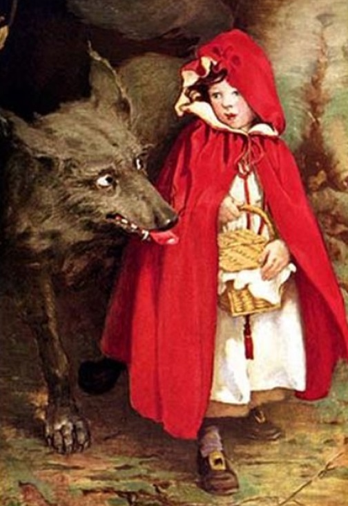

«Красная Шапочка» (фр. Le Petit Chaperon rouge; нем. Rotkäppchen) — народная европейская сказка с сюжетом о маленькой девочке, повстречавшей волка. Литературно обработана Шарлем Перро, позже была записана братьями Гримм.
Сюжет о девочке, обманутой волком, был распространён во Франции и Италии со Средних веков. В альпийских предгорьях и в Тироле сказка известна по меньшей мере с XIV века и пользовалась особой популярностью. Содержимое корзинки варьировалось: в северной Италии внучка несла бабушке свежую рыбу, в Швейцарии — головку молодого сыра, на юге Франции — пирожок и горшочек масла. В фольклорных записях сюжет выглядит следующим образом:
Мать посылает дочь к бабушке с молоком и хлебом. Та встречает волка, оборотня или даже огра, рассказывает ему, куда идёт. Волк обгоняет девочку, убивает бабушку, готовит из её тела кушанье, а из крови — напиток, одевается в одежду бабушки и ложится в её кровать. Когда девочка приходит, волк предлагает ей поесть. Бабушкина кошка пытается предупредить девочку о том, что та ест останки бабушки, но волк кидает в кошку деревянными башмаками и убивает её. Потом волк предлагает девочке раздеться и лечь рядом с ним, а одежду бросить в огонь. Та так и делает и, улегшись рядом с волком, спрашивает, почему у него много волос, широкие плечи, длинные ногти, большие зубы. На последний вопрос волк отвечает: «Это чтобы поскорее съесть тебя, дитя моё!» и съедает девочку.
Таким образом кончается большинство записанных вариантов, хотя в некоторых девочка при помощи хитрости убегает от волка.